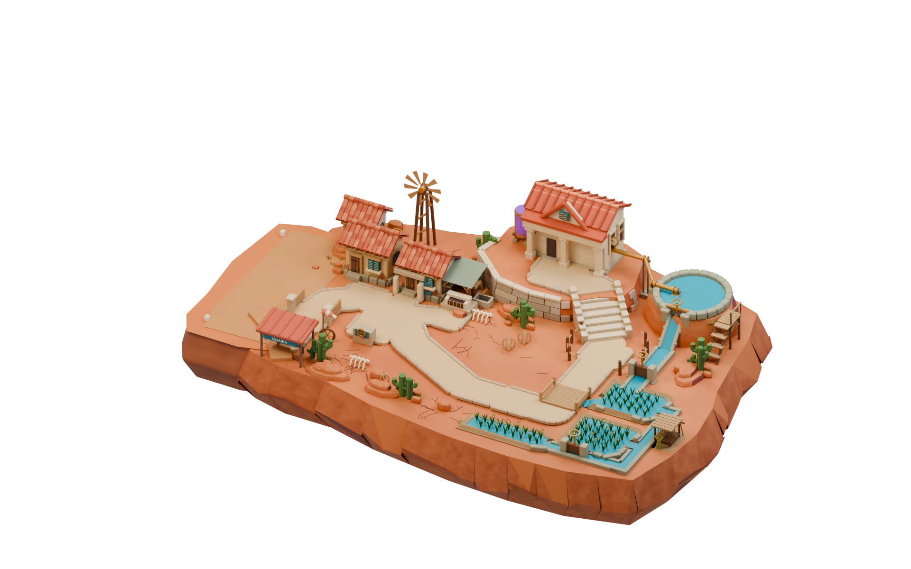
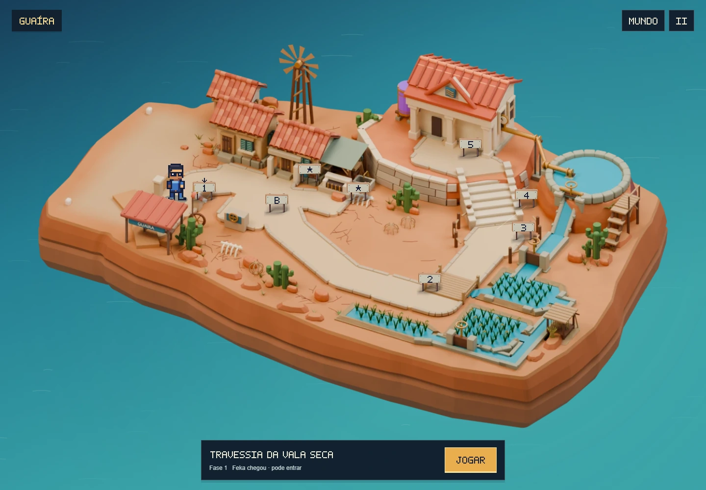
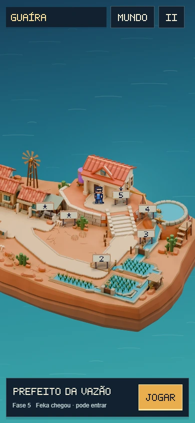

Uma base contínua
para Guaíra.
A pista, o bairro e os arrozais agora assentam sobre o mesmo terreno. Esta revisão trabalha o contorno da ilha, as camadas expostas de terra e o relevo entre os caminhos, com a caminhada integrada preservada.
Ver a revisão 5: acabamento das entradas, curral e elevador · Revisão 3: costa, praça e reservatório
Revisão mais recente: Caminhos, ponte e posicionamento das placas — revisão 6.


Pista ligada à ilha
A emenda entre as duas bases foi removida. A cor da terra batida se dissolve no solo, mantendo a área de pouso nivelada.
Margens com continuidade
As faces triangulares sobrepostas deram lugar a uma malha fechada, com borda arredondada e camadas de sedimento irregulares.
Relevo e apoio
Pequenas elevações, afloramentos baixos e grupos de capim seco acompanham os espaços livres. As fissuras seguem a superfície.
Acabamento do terreno
Dentro do World
Feka percorre os mesmos acessos às fases, atravessa a ponte e sobe a escadaria. A imagem, a profundidade e a camada de água restaurada foram exportadas do modelo revisado.


Revisado em três passagens
- União do terreno e da pista, seguida de revisão das normais e do contorno para eliminar vincos escuros.
- Ajuste das camadas de solo, afloramentos, vegetação baixa e fissuras que alcançavam a borda.
- Renderização final em 1920 × 1200, com profundidade da mesma câmera, e conferência da caminhada e dos voos.
As verificações cobrem a integridade das novas malhas, apoio dos caminhos e das margens, acesso às oito cenas e retorno ao mapa. Resultados e limites estão no registro desta revisão e no relatório de verificação.